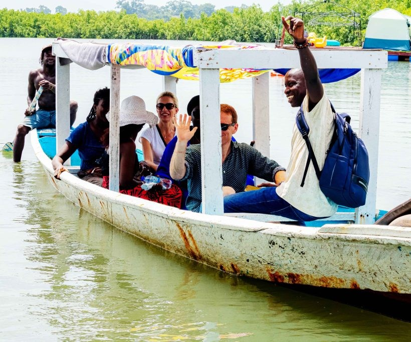
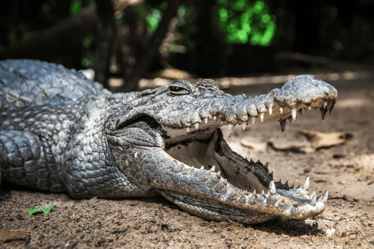
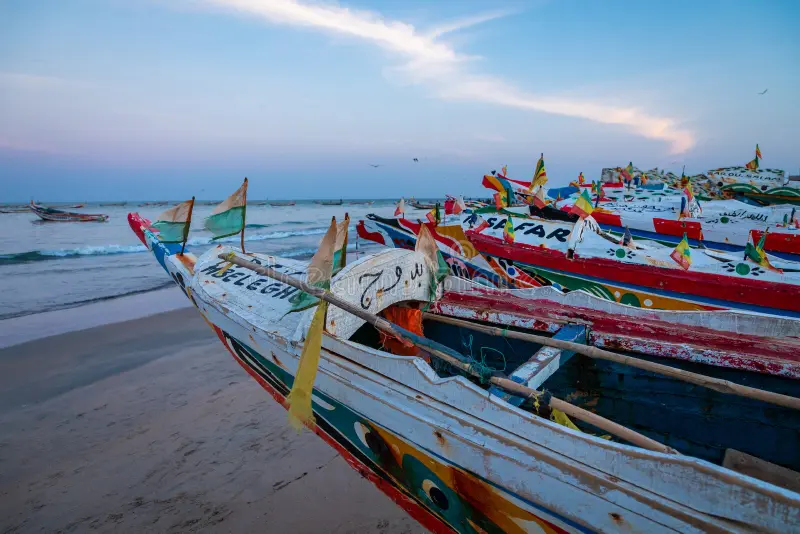
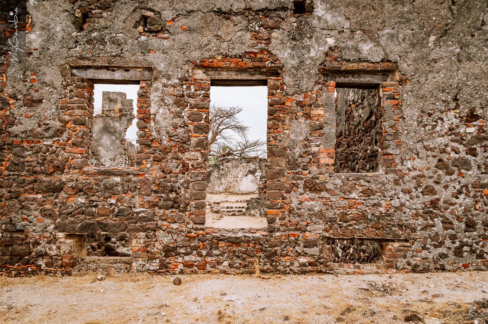
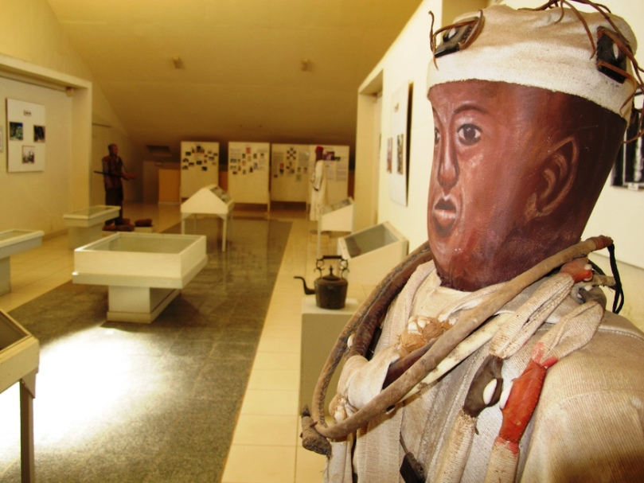
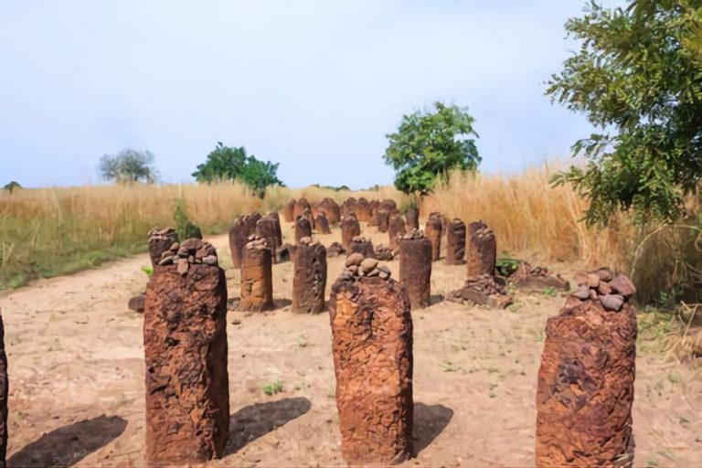
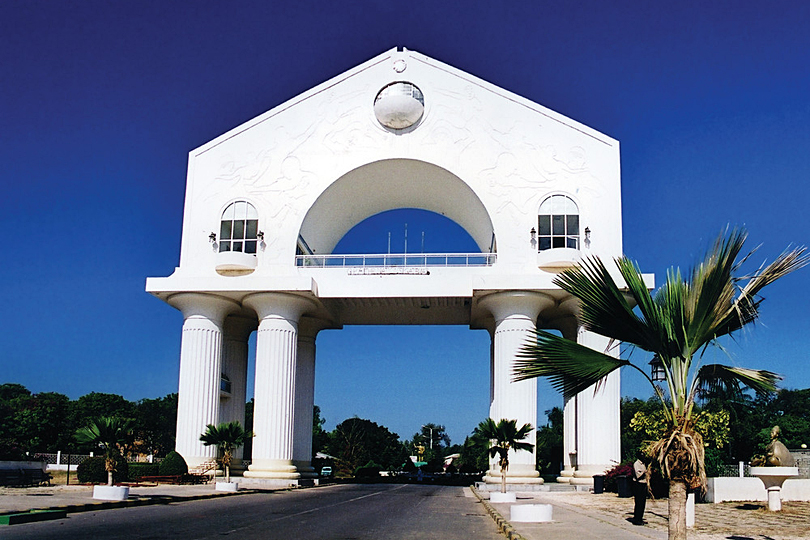
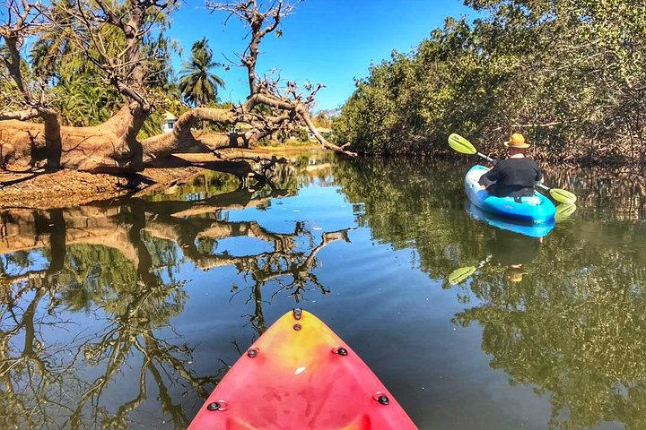
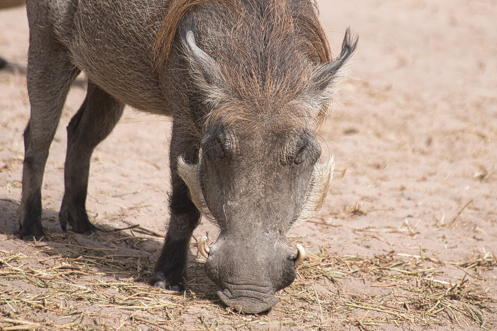
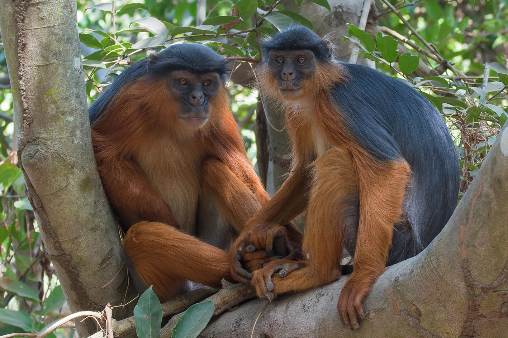

Discover Popular Sites
Explore the most iconic landmarks and must-see destinations across the Smiling Coast. From bustling city centers to serene coastal retreats, these are the locations every traveler loves.

Kachikally
- Sacred crocodile pool & museum
- Sacred crocodile pool & museum

Tanjeh Fishing Village
- Lively scenery of fish market
- Lively scenery of fish market

Kunta Kinteh Island
- Historic slave trade fortress
- Historic slave trade fortress
Explore History & Culture
Uncover the deep-rooted heritage and vibrant traditions that shape the Gambian way of life. Visit ancient monuments and local museums to journey through the stories of our past.

National Museum
- Cultural treasures & heritage
- Cultural treasures & heritage

Wassu Stone Circle
- Ancient sacred burial grounds
- Ancient sacred burial grounds

Never Again Memorial Arch
- Iconic panoramic landmark
- Iconic panoramic landmark
Experience Nature & Wildlife
Immerse yourself in lush tropical forests and witness exotic animals in their natural habitats. From rare birds to playful primates, discover the incredible biodiversity that makes our region unique.

Tanjeh creek
- Bird watching & kayaking
- Bird watching & kayaking

Fathala Wild Life Reserve Safari
- Thrilling wildlife encounters
- Thrilling wildlife encounters

Bijilo Monkey Park
- Coastal forest & friendly monkeys
- Coastal forest & friendly monkeys